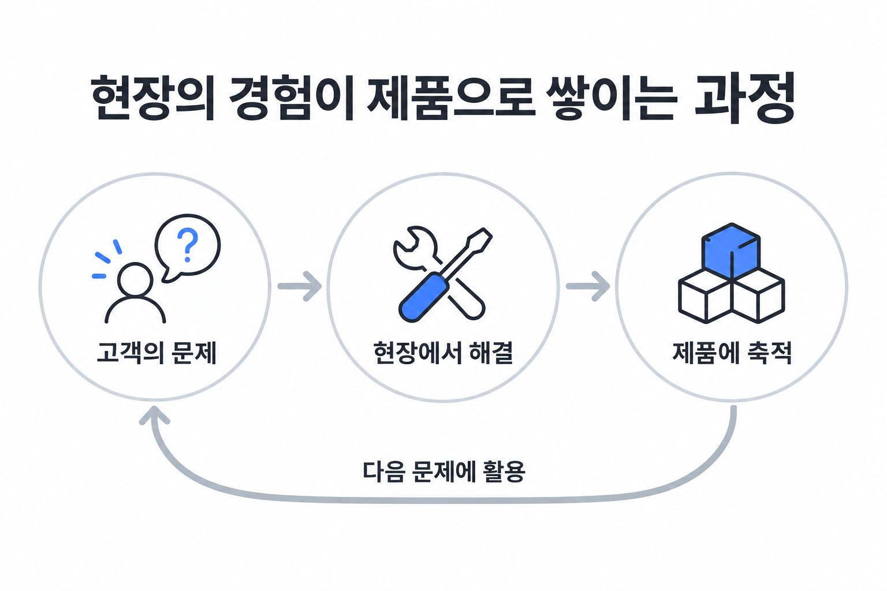
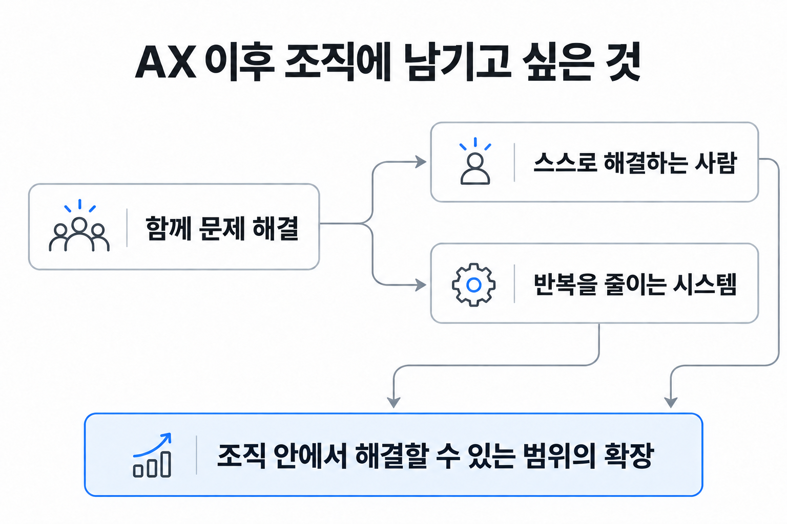
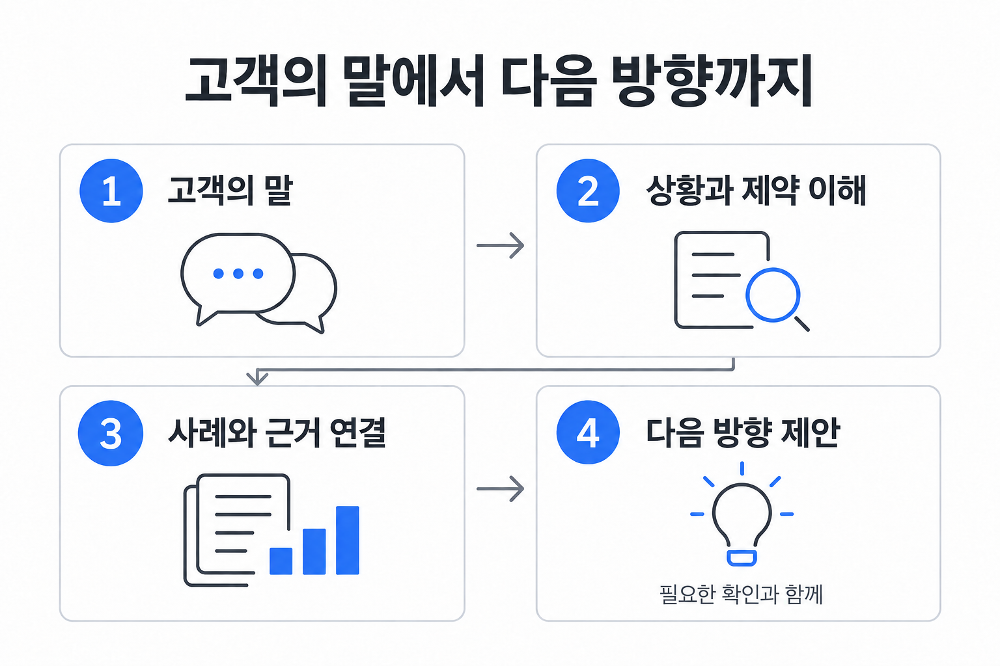

FDE를 공부하며 돌아본 AX 컨설턴트의 역할
AX 시대의 FDE는 조직에 무엇을 남길까
현장에서 문제를 해결하는 방식에서 출발해, 조직에 남길 역량과 내가 기르고 싶은 소통을 생각했다.
FDE 인터뷰를 읽으며, AX를 돕는 일이 끝난 뒤에도 조직이 스스로 해결할 수 있는 것이 남았으면 좋겠다고 생각했습니다. 그 역할을 위해 제가 먼저 기르고 싶은 것은 고객의 말을 이해하고 방향을 함께 잡는 역량이에요.
최근 조쉬의 뉴스레터에서 팔란티어의 FDE 인터뷰를 소개한 글을 읽었습니다.
저는 지금 AX 컨설턴트로 일하고 있어요. 회사에서도 FDE에 관해 스터디하며 어떤 일을 하는지, 어떤 역할과 효과를 기대할 수 있는지 조금씩 공부해왔습니다. 국내에서도 이 말을 접하는 일이 늘어난 것 같아 더 관심이 갔고요.
직접 FDE로 고객 현장에 들어가 문제를 해결해본 경험은 없습니다. 이번 글 역시 현장 경험을 정리하는 글은 아니에요. 공부해온 개념을 지금 제가 하는 일에 비춰보면서, AX를 돕는 사람은 조직에 무엇을 남겨야 할지 생각해본 기록에 가깝습니다.
오래된 방식이 지금 다시 눈에 들어왔다
인터뷰에서 먼저 마음에 남은 것은 악샤이 크리슈나스와미가 들려준 지난 시간의 이야기였습니다. 팔란티어의 FDE는 오랫동안 용역과 무엇이 다르냐는 의심을 받았다고 해요. 그런 시기를 지나 같은 방식을 이어온 태도가 인상적이었습니다.
저에게는 요즘 자주 보이는 키워드였는데, 누군가에게는 이미 오랫동안 해온 일이었다는 점도 새삼스러웠어요.
새로운 이름을 알게 되면 새로운 역할이 생겼다고 생각하기 쉽습니다. 그런데 이번에는 예전부터 있던 방식이 왜 지금 더 중요하게 느껴지는지를 생각하게 됐어요. 제가 AX라는 맥락에서 일하고 있기 때문에 더 그렇게 읽혔을 수도 있겠죠.
현장에서 해결한 일이 제품에 쌓인다는 것
FDE는 Forward Deployed Engineer의 줄임말로, 고객 현장에 들어가 문제를 풀며 제품을 만드는 역할입니다. 인터뷰는 고객이 얻어야 할 결과를 먼저 두고, 거기에 필요한 것을 찾아 만든다고 설명해요. 그렇게 얻은 해법을 다른 상황에서도 쓸 수 있도록 제품에 축적하고요. 원문에서 설명하는 FDE의 핵심을 저는 이 흐름으로 이해했습니다.
처음에는 특정 분야의 역량을 가진 사람이 고객을 찾아가 문제를 해결한다는 점에서 SI와 비슷하게 느꼈습니다. 하지만 현장에서 한 번 해결하는 일과 그 경험을 다음에도 쓸 수 있게 만드는 일을 함께 맡는다는 점이 눈에 들어왔어요.

이것만으로 실제 SI와 FDE를 깔끔하게 나눌 수 있다고 생각하지는 않습니다. 다만 FDE를 공부할 때, 누가 어디에 가서 일하느냐만으로 이해하면 놓치는 부분이 있겠다는 생각이 들었어요. 해결한 일이 이후에 어떤 형태로 남는지도 함께 봐야 하니까요.
AX에서는 조직이 스스로 할 수 있는 일도 늘었으면 한다
여기서부터는 원문의 설명을 제 일에 연결해본 생각입니다.
AX를 AI를 활용해 조직의 일하는 방식을 바꾸는 일로 본다면, FDE처럼 현장의 문제를 가까이에서 풀어가는 방식은 더 중요해질 것 같아요. 그 과정에서 고객 조직 자체의 역량도 높일 수 있다고 보기 때문입니다.
제가 기대하는 변화가 꼭 거창한 것은 아닙니다. 일을 마친 뒤 그 조직에 스스로 해결할 수 있는 사람이나 시스템이 남는 모습이에요. 모든 문제를 내부에서 해결할 수는 없겠죠. 그래도 전에는 외부에 맡겨야 했던 일의 일부를 조직 안에서 알아서 할 수 있게 된다면 의미가 있지 않을까요.
가령 담당자가 반복 업무를 AI로 처리하는 방법을 익히고, 결과를 확인하며 작은 수정까지 할 수 있게 될 수 있습니다. 사람이 매번 손으로 처리하던 일을 줄여주는 시스템이 남을 수도 있고요. 제가 직접 만들어낸 성과가 아니라, 앞으로 이런 일을 하며 기대하는 모습입니다.

원문에서 말하는 제품의 축적과 제가 기대하는 고객 조직의 역량 향상이 같은 뜻은 아닙니다. 다만 해결 과정에서 배운 것이 사라지지 않고 다음 문제에 쓰이기를 바란다는 점에서 연결해보고 싶었어요.
전부는 아니더라도, 일부분은 조직 안에서 알아서 할 수 있게 남기는 일.
물론 시스템을 남기는 것만으로 그 일이 끝나지는 않을 겁니다. 누가 사용하고 관리할지, 문제가 생기면 어디까지 내부에서 판단할 수 있을지도 함께 생각해야 하겠죠. 조직의 역량이 높아졌다는 말은 결과물을 전달했다는 사실만으로 붙일 수 있는 말은 아닐 테니까요.
지식을 알고 있다는 것만으로는 차이를 만들기 어렵다
이런 역할을 생각하다 보면 자연스럽게 사람의 역량에 대한 질문으로 이어집니다.
솔직히 저는 단순한 지식을 얼마나 알고 있느냐만 놓고 보면, 이제 시니어와 주니어의 차이가 크지 않을 수도 있다고 생각해요. 모르는 내용을 LLM과 함께 찾아보고 설명을 요청할 수 있으니까요. 경력이 짧다는 이유만으로 정보에 접근하지 못하는 상황은 줄어들고 있다고 느낍니다.
그렇다고 전문적인 경험이나 폭넓은 지식까지 필요 없어졌다는 뜻은 아닙니다. 오히려 그런 역량을 지금의 문제에 연결하는 능력이 더 중요해지는 것 같아요.
어떤 사례가 이 상황과 닮았는지, 겉으로 비슷해 보여도 무엇이 다른지, 어떤 근거를 확인해야 하는지 판단하는 일 말입니다. LLM이 여러 답을 제시해주더라도 그중 무엇이 고객의 상황에 맞는지는 다시 살펴야 하죠.
그래서 제가 생각하는 경험의 가치는 연차 자체보다 경험을 쓰는 방식에 있습니다. 많이 겪어본 사람이 지금의 문제를 더 잘 이해하고, 다른 분야의 사례까지 연결해 설명해줄 수 있다면 그 차이는 여전히 클 거예요.
내가 가장 기르고 싶은 것은 방향을 함께 잡는 소통이다
지금 제게 가장 중요하게 느껴지는 역량은 소통하는 방식입니다.
고객의 이야기를 듣는 것에서 출발해, 그 말의 의미를 이해하고 방향을 바로잡는 데 도움을 줄 수 있어야 한다고 생각해요. 그러려면 제 견해도 넓어야 합니다. 알고 있는 도구 몇 개만 떠올리면서 모든 문제를 그 안에 맞출 수는 없으니까요.
어렵게 느껴지는 부분도 바로 여기입니다. 이야기를 듣고 나서 어떤 사례나 근거를 연결해, 그 자리에서 해결책까지는 아니더라도 방향을 이야기해줄 수 있는가. 제가 갖추고 싶은 역량은 그런 모습에 가까워요.
예를 들어 고객이 “이 업무에 AI를 넣고 싶다”고 말했다고 가정해볼 수 있겠습니다. 도구부터 제안하기 전에 시간이 많이 드는 지점이 어디인지, 반복 작성이 문제인지 아니면 필요한 정보를 찾는 과정이 문제인지 더 알아야 할 것 같아요. 그에 따라 참고할 사례도 달라질 테고요.

이런 대화에서 근거를 갖고 다음 방향을 제안하는 사람이 되고 싶습니다. “비슷한 사례에서는 이 부분부터 살펴봤는데, 여기서도 먼저 확인해보면 좋겠습니다” 정도라도 말할 수 있는 사람이요.
그 자리에서 방향을 이야기할 수 있기를 바라지만, 그것이 항상 즉답해야 한다는 뜻은 아닐 겁니다. 아직 모르는 조건이 있다면 확인해야겠죠. 제가 바라는 것은 빠르게 답하는 모습 자체보다는, 고객의 말을 듣고 함께 생각을 진전시킬 수 있는 역량입니다.
FDE를 공부하다가 내 역할을 다시 생각했다
처음에는 요즘 관심이 가는 직책을 더 알아보고 싶어 읽은 글이었습니다. 다 읽고 나서는 AX를 돕는 사람으로서 무엇을 할 수 있어야 하는지가 더 오래 남았어요.
FDE의 방식을 조직 전체의 AX 역량 향상으로 이어갈 수 있을지는 실제로 부딪히며 배워야 할 부분입니다. 지금의 저는 그 효과를 경험으로 증명할 수 있는 단계에 있지는 않습니다. 다만 어떤 변화를 만들고 싶은지는 조금 더 분명해졌어요.
문제를 함께 해결한 뒤에는 일부라도 조직 안에서 스스로 해낼 수 있는 것이 남았으면 합니다. 그러려면 저부터 고객의 상황을 이해하고, 아는 사례를 꺼내 연결하고, 판단의 근거를 설명하는 연습이 필요하겠죠.
앞으로 사례를 공부할 때도 무엇을 만들었는지에서 한 걸음 더 들어가 보고 싶어요. 왜 그 방법을 택했는지, 어떤 조건에서 통했는지, 다른 조직에 가져가려면 무엇을 확인해야 하는지까지요. 그래야 읽어둔 지식이 실제 대화에서 쓸 수 있는 견해로 이어질 것 같습니다.
다음에는 무엇을 해결해줄 수 있을지만큼, 그 일이 끝난 뒤 조직이 무엇을 스스로 할 수 있게 될지도 함께 묻고 싶습니다.